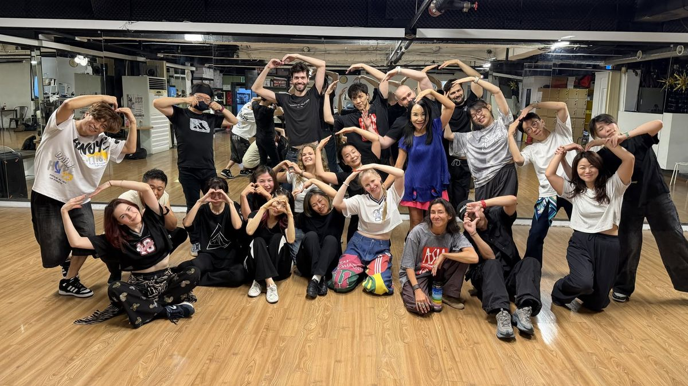

Learn West Coast Swing. Make friends in Seoul.
Three Sunday evening classes for complete beginners, taught in English. Come on your own. You’ll meet people as you learn.
- Starts
- Sunday, Dec 6
- Time
- Sundays
6:30–7:30 PM - Where
- Near Gangnam Station
- Price
- 60,000 KRW
30 spots. Sign up by Friday, Dec 4.

This is for you if
- You’re in Seoul and want to meet people outside work, Koreans and foreigners alike, without it being another night at a bar
- You’ve always wanted to learn to dance, but never had a partner (or the nerve)
- You’d rather learn dancing in English, or want to practise your English while you learn
- You’d like to start from scratch with other people who are new to it too
What is West Coast Swing?
A smooth, relaxed partner dance you can do to the music you already listen to: pop, R&B, hip-hop, even slow ballads.
There’s no choreography to memorise. You learn a few basic moves, then the leader chooses what comes next and the follower goes with it. It works a bit like a conversation.
After three Sundays, you’ll know enough of the basics to ask someone to dance at the social dance party and enjoy it.
Your teachers
Jamie
Jamie is from the US and will have been dancing West Coast Swing for 10 years this February. Jamie loves how it connects people from all over the world and lets every dancer bring their own style. And it’s just fun!
Joe
Joe is from the UK and has been dancing West Coast Swing for over 10 years. What Joe loves most is turning favourite songs into little moments of magic with a partner.
Class schedule
- Class
- 6:30–7:30 PM. We rotate partners, so you’ll dance with everyone.
- After class
- Stay for the social dance party. Entry is free for students, and we’ll be there to dance with you.
- Roles
- 15 leaders and 15 followers, first come, first served. Leaders guide the moves and followers respond to them. Traditionally, men are taught to lead and women to follow, but many people learn both roles. Feel free to choose whichever role you prefer, and you can always learn the other one later!
- Bring
- Dance shoes, or comfortable shoes that aren’t too grippy. Please don’t wear heels. Comfortable clothes and water.
Venue and getting there
- Venue
- Westies (웨스티스)
Open in Naver Map - From the station
- [placeholder for walking instructions from Gangnam Station]
- Transport
- There's no parking at the venue, so we recommend public transport.
- Parking
-
Nice Park, Samwon Tower: weekend day pass 8,000 KRW, valid all day, 5 minutes' walk. Buy the ticket in the Modu Parking (모두의주차장) app before you drive in.
Public car parks: Yeoksam 1-dong Cultural Center, Gangnam Cultural Center
Pricing
- All 3 classesIncludes the social dance party after each class60,000 KRW
- Single classIf you already know some West Coast Swing25,000 KRW
Bring a friend: sign up for all 3 classes together and you each pay 55,000 KRW.
Payment
You can pay by Korean bank transfer, Venmo or Wise. You’ll get the payment details when you sign up.
If you can't use any of these, let us know on the sign-up form and we'll sort something out.
Please pay within 48 hours of signing up. Your spot is confirmed once we receive payment.
Policies
- Refunds
- Full refund up to 48 hours before the first class. No refunds after that.
- Cancellation
- If fewer than 3 leaders and 3 followers sign up, we may cancel the course. We'll message you 3 days before the start date.
Questions
Do I need to bring a partner?
No. Come on your own. We rotate partners during class, so you’ll dance with everyone.
I’ve never danced and I’ve got no rhythm. Is that OK?
Yes. The class is for complete beginners and we start from the very basics.
What should I wear?
Comfortable clothes you can move in, and dance shoes or comfortable shoes that aren’t too grippy. Please don’t wear heels. Bring water too.
Do I have to stay for the social dance party?
No, it’s optional. Stay as long as you like, or head home after class.
When do I need to pay?
Within 48 hours of signing up. Your spot is confirmed once we receive payment. Sign-ups close on Friday, Dec 4.
How do I get there?
Take the subway to Gangnam Station and leave by exit 2. Walking directions are under Venue and getting there.
The first class is on Sunday, Dec 6.
Sign up by Friday, Dec 4.